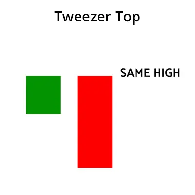

ட்விஸ்டர் மேல் பாட்டம் என்பது ஒரு வர்த்தக முறையாகும், இது பங்கு சந்தையில் மேலும்
வளர்ச்சியையும், குறைந்த வளர்ச்சியையும் குறிக்கும். இந்த பாட்டம் இரண்டு கண்டில்ஸ்டிக்ஸ்களால்
உருவாகிறது. முதல் கண்டில்ஸ்டிக் ஒரு நீளமான மேலேற்று கண்டில்ஸ்டிக் ஆகும் மற்றும்
இரண்டாவது கண்டில்ஸ்டிக் ஒரு குறுகிய மேலேற்று கண்டில்ஸ்டிக் ஆகும், அதன்
உடலின் நீளம் முதல் கண்டில்ஸ்டிக் உடலின் நீளத்தை விட குறைவாக இருக்கும்.
ட்விஸ்டர் மேல் பாட்டம் ஒரு மேலும் வளர்ச்சியின் அசைவை சுட்டிக்காட்டுகிறது.
இந்த பாட்டத்தைக் கண்டுபிடித்தால், பங்கு சந்தையில் மேலும் வளர்ச்சி திசையில்
வர்த்தகத்தை செய்ய முடியும்.